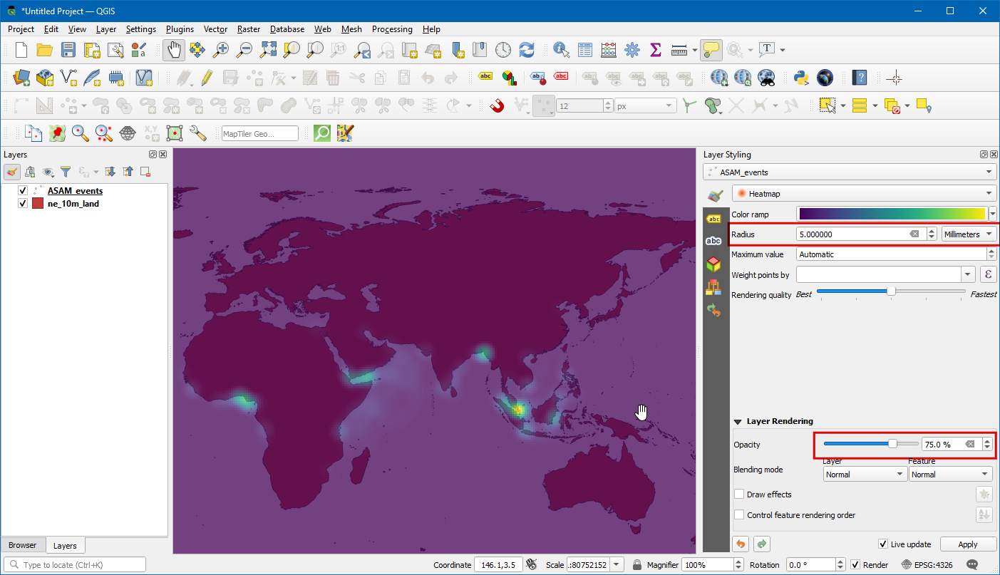
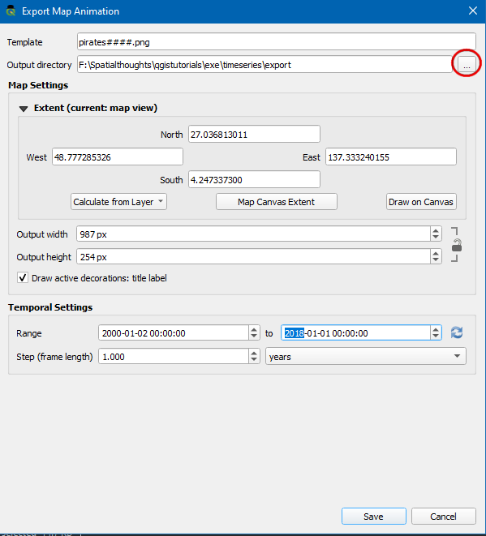
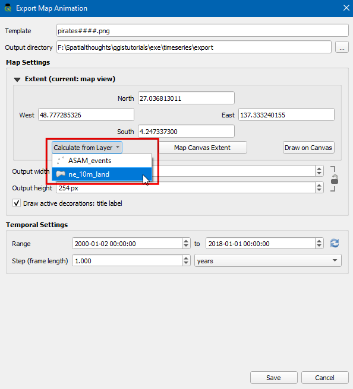

Prikazovanje podatkov časovnih vrst (QGIS3)¶
Time is an important component of many spatial datasets. Along with location information, time provides another dimension for analysis and visualization of data. If you are working with dataset that contains timestamps or have observations recorded at multiple time-steps, you can easily visualize it using the Temporal controler. Temporal controler allows you to view and export ‚slices‘ of data between certain time intervals that can be combined into animations.
Opomba
Temporal Controller je na voljo od različice QGIS 3.14 naprej. Za starejše različice QGIS zagotavlja podobno funkcionalnost vtičnik Time Manager.
Pregled naloge¶
Vzeli bomo točkovni sloj pomorskih piratskih incidentov, ustvarili vizualizacijo karte zgostitev in ustvarili animacijo o tem, kako so se žarišča piratstva spreminjala v zadnjih dveh desetletjih.
Česa se bomo še naučili¶
Uporaba upodobitvenega programa Heatmap za hitro vizualizacijo gostih točkovnih podatkov
Ustvarjanje in uporaba projekcij zemljevidov po meri
Pridobivanje podatkov¶
National Geospatial-Intelligence Agency’s Maritime Safety Information portal provides a shapefile of all incidencts of maritime piracy in the form on Anti-shipping Activity Messages. Download the Arc Shape file version of the database.
Zbirka Natural Earth vsebuje več vektorskih podatkovnih slojev, ki pokrivajo celoten svet. Prenesite sloj 10m Physical Vectors - Land, ki vsebuje poligone na kopnem.
Kopijo podatkov lahko poberete tudi neposredno s spodnjega naslova:
Vir podatkov: [NGA_MSI] [NATURALEARTH]
Postopek¶
Na plošči brskalnika QGIS poiščite mapo, v katereo ste shranili prenesene podatke. Razširite
ne_10m_land.zipin izberite slojne_10m_land.shp. Sloj povlecite na delovno površino. Nato poiščite datotekoASAM_shp.zip. Razširite jo in izberite plastasam_data_download/ASAM_events.shpter jo povlecite na delovno površino.

Ko je sloj naložen, si lahko ogledate posamezne točke, ki predstavljajo lokacije piratstva. Incidentov je na tisoče in težko je določiti, če je piratstva več. Namesto posameznih točk je boljši način za vizualizacijo teh podatkov karto zgostitev. Izberite sloje
ASAM_eventsin kliknite gumb Open the layer Styling Panel (Odpri ploščo za oblikovanje slojev) na plošči Layers (Sloje). Kliknite spustno oknoSingle symbol.

V spustnem oknu za izbiro upodabljavca izberite
Heatmap. Nato izberite barvno rampoViridisiz izbirnika Color ramp.

Vrednost Radius prilagodite na
5,0`. Na dnu razširite razdelek Layer Rendering in prilagodite vrednost Opacity na75,0 %. S tem dobite lep učinek vročih točk s slojem kopnega pod njim.

Sedaj animirajmo te podatke, da prikažemo letni zemljevid piratskih incidentov. Z desno tipko miške kliknite na sloj
ASAM_eventin izberiteProperties.

V pogovornem oknu Layer properties izberite zavihek Temporal in ga omogočite s klikom na potrditveno polje.

Izvorni podatki vsebujejo atribut
dateofocc, ki predstavlja datum, ko se je incident zgodil. To je polje, ki se bo uporabilo za določitev točk, ki se prikažejo za vsako časovno obdobje. V spustnem meniju Configuration izberiteSingle Field with Data/Time,dateofocckot Field.

Zdaj se bo ob imenu plasti pojavil simbol ure. Kliknite na
Temporal Control Panel(ikona ure) v orodni vrstici Map Navigation Toolbar.

Kliknite na
Animated Temporal Navigation(ikona za predvajanje), da aktivirate nadzor animacije. Kliknite Set to Full Range (ikona za osvežitev) poleg Range, da samodejno nastavite časovno območje, ki se ujema z naborom podatkov.

Zdaj si lahko ogledate animacijo. Nastavite Step kot
1 Yearin kliknite gumb Play za začetek animacije.

Opomba
Če je animacija prehitra, lahko hitrost sličic na sekundo prilagodite tako, da kliknete Temporal Settings (rumena ikona zobnika) v zgornjem desnem kotu plošče Temporal Controller. Z zmanjšanjem hitrosti sličic na sekundo se bo animacija upočasnila.
Koristno bi bilo, če bi se na zemljevidu prikazal napis tudi s trenutnim časovnim okvirjem. To lahko storimo z vgrajenim zavihkom Naslov. Pojdite na .

Kliknite potrditveno polje, da ga omogočite, in kliknite gumb
Insert an Expressionter vnesite naslednji izraz za prikaz leta. Tukaj spremenljivka@map_start_timevsebuje časovni žig trenutne časovne rezine, ki se prikazuje. Zato lahko uporabimo ta časovni žig in ga oblikujemo za prikaz leta nastanka. Za podrobnosti o različnih podprtih možnostih oblikovanja časovnega žiga glejte QGIS Documentation.
format_date(@map_start_time, 'yyyy')
Izberite font size kot
25, nastavite background bar bar kotWhitein nastavite prosojnost na50%. V polju Placement izberiteBottom Right. Zdaj kliknite Ok.

Ko so parametri ustrezno nastavljeni, se leto prikaže, kot je prikazano na sliki. Za izvoz teh slik in pretvorbo v format GIF izberite
Export Animation(ikona za shranjevanje) v nadzornem oknu Temporal.

Kliknite na
...Output directory, da izberete imenik, v katerega bodo slike shranjene.

Pod Extent izberite sloj. Kliknite Shrani.

Ko se izvoz konča, boste v izhodnem imeniku videli slike PNG za vsako leto (skupaj 18 slik).

Zdaj iz teh slik ustvarimo animirani GIF. Obstaja veliko možnosti za ustvarjanje animacij iz posameznih slikovnih sličic. Najraje imam ezgif za enostavno in spletno orodje. Obiščite spletno mesto in kliknite Choose Files ter izberite vse datoteke .png. Ko jih izberete, kliknite gumb Upload and make a GIF!. Ko je ustvarjen, lahko prenesete GIF z gumbom Save.

If you want to give feedback or share your experience with this tutorial, please comment below. (requires GitHub account)